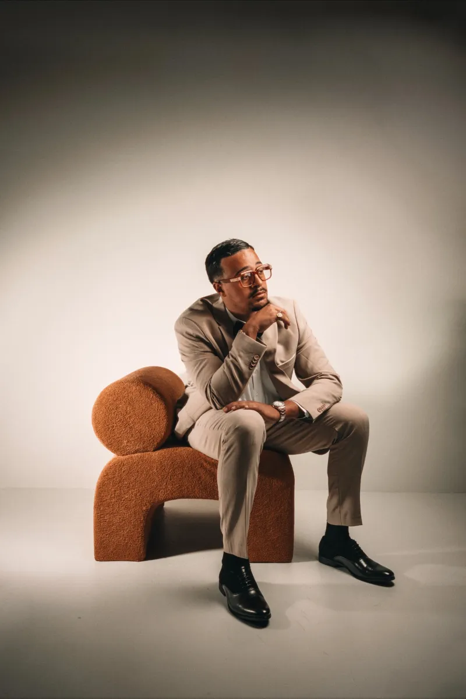
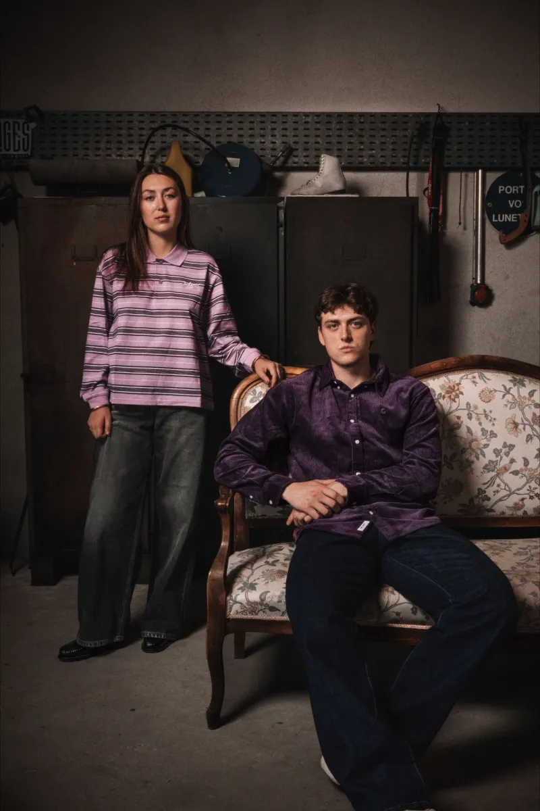
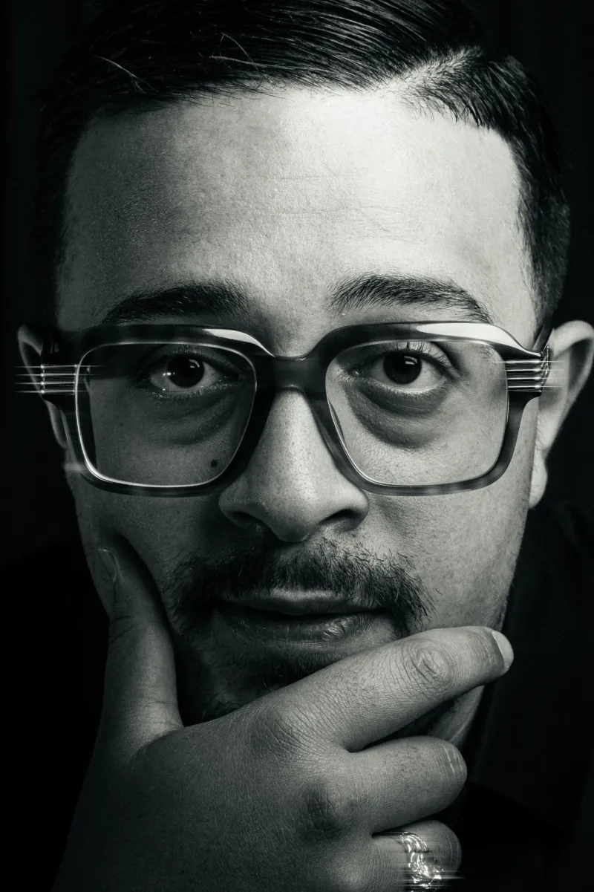
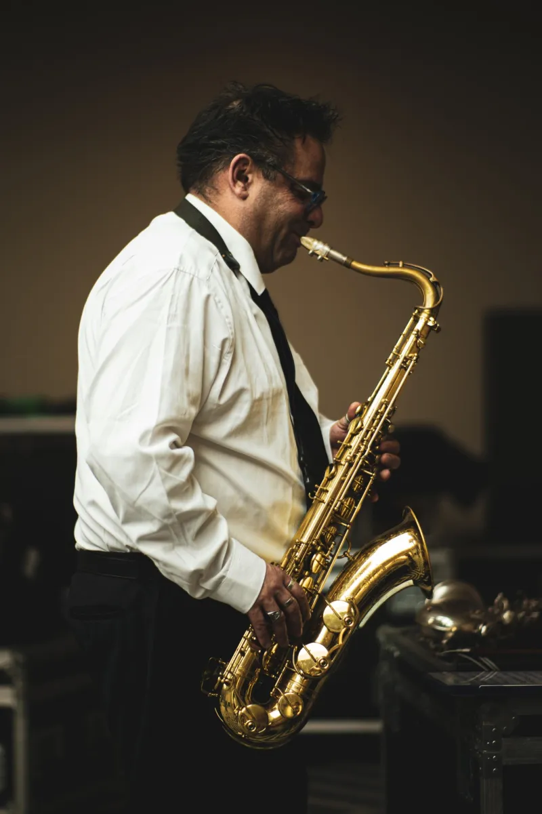

Photographie de studio, de mode, de portrait et d'événement pour les entreprises, les marques et les artistes d'Avignon et du Vaucluse. Réalisateur de formation, je réalise des séances photo seules ou en complément d'un tournage vidéo.
Je privilégie des images naturelles, prises sur le vif, à des poses figées et une retouche lourde.
J'ai suivi des études de cinéma avant de fonder HUMAN REC, studio de production audiovisuelle basé à Avignon. J'y réalise des films publicitaires, promotionnels et événementiels pour des entreprises, des salles de sport, des spectacles et des lieux de réception. La photographie s'est développée en parallèle, avec le même travail sur le cadre et la lumière.
Pendant une séance, je donne peu de consignes et laisse les situations se mettre en place, ce qui donne des expressions plus spontanées. La retouche porte sur la lumière, la colorimétrie et les imperfections passagères de la peau. Les traits du visage ne sont pas modifiés.
RenduCouleur ou noir et blanc, selon l'usage des images
Prestations
Ce que je photographie à Avignon
Quatre prestations principales, adaptées à chaque projet. Les demandes plus spécifiques, comme un packshot seul, la photographie d'un lieu ou un reportage d'entreprise, sont étudiées au cas par cas.
01

01Studio
Shooting photo en studio
La séance en studio permet de maîtriser entièrement le fond et la lumière. Elle convient aux portraits d'équipe, aux visuels de campagne et aux gammes de produits qui doivent être photographiées dans des conditions identiques d'une image à l'autre.
Le fond et l'éclairage peuvent aussi être installés dans vos locaux, ce qui évite de déplacer vos équipes.
Portrait d'équipe
Packshot
Campagne
Portrait d'artiste
02

02Mode
Photographe pour marque de vêtements
Pour une marque de vêtements, les photos doivent restituer fidèlement la matière, la couleur et la coupe de chaque pièce. Je réalise les lookbooks portés, les visuels de campagne et les packshots à plat, avec un traitement homogène sur toute la série, de la boutique en ligne aux réseaux sociaux.
La liste des pièces, les tenues et l'ordre de passage sont préparés en amont avec vous afin de respecter le planning de la journée.
Lookbook
E-shop
Campagne
Réseaux sociaux
03

03Portrait
Portrait professionnel et artistique
Portrait de dirigeant, photo de profil pour LinkedIn ou pour le site de votre entreprise, portrait d'artiste destiné à une affiche ou à un dossier de presse. La séance est courte et peut se dérouler en studio ou sur votre lieu de travail.
Les personnes peu habituées à être photographiées sont guidées tout au long de la séance. Les images sont livrées en couleur, en noir et blanc, ou dans les deux versions.
Portrait corporate
Photo de profil
Artiste
Dossier de presse
04

04Événement
Photographe événementiel et concert
Soirées d'entreprise, séminaires, concerts, spectacles et inaugurations, à Avignon, dans le Vaucluse et dans le Gard. Je couvre l'événement avec discrétion, avec un matériel compact et des optiques lumineuses adaptées aux salles peu éclairées.
Le reportage suit le déroulé prévu : arrivée des invités, prises de parole, temps forts et ambiance générale. Une liste de photos indispensables peut être établie avec vous avant l'événement.
Soirée d'entreprise
Concert
Spectacle
Inauguration
Déroulement
Comment se passe un shooting
Au labo, une image passe par quatre bains avant d'être accrochée. Un projet photo suit lui aussi quatre étapes.
Bain 01 Révélateur
Premier échange
Nous définissons ensemble le sujet, le lieu, la date et l'usage prévu des images : site internet, réseaux sociaux, presse ou impression. Vous recevez ensuite un devis gratuit et détaillé.
Bain 02 Arrêt
Préparation
Repérage du lieu si nécessaire, liste des images attendues et planning de la séance. Pour une marque, nous préparons la liste des pièces. Pour un événement, le programme et les moments clés.
Bain 03 Fixateur
Prise de vue
En studio, dans vos locaux ou sur le lieu de l'événement. J'utilise la lumière disponible ou un éclairage d'appoint selon les conditions de la séance.
Bain 04 Lavage
Sélection et livraison
Je sélectionne et retouche les meilleures images, puis je vous livre les fichiers en haute définition, aux formats adaptés au web et à l'impression.
Galerie
Studio, mode, reportage et événement
Une sélection d'images récentes : portraits en studio, lookbook pour la marque de vêtements Glory Days, reportage pendant les vendanges, concerts et soirées. L'ensemble des séries est visible dans la galerie complète.
Portraits, détails et vues d'ensemble, destinés à votre site, aux réseaux sociaux, à la presse ou à l'impression.
Rec
Le film
Aftermovie, film promotionnel ou formats courts pour les réseaux sociaux, réalisés par l'équipe HUMAN REC.
Confier la photo et la vidéo à la même équipe simplifie l'organisation : un seul interlocuteur, un seul brief et une direction artistique commune aux deux supports. En savoir plus sur la captation événementielle et la vidéo promotionnelle. La photo peut également être réservée seule.
Tarifs
Combien coûte un photographe à Avignon ?
Chaque devis est établi sur mesure. Le tarif dépend principalement des cinq critères ci-contre, sur lesquels il est possible d'agir pour adapter la prestation à votre budget.
Déplacement offert sur Avignon, le Vaucluse, le Gard rhodanien, le nord des Bouches-du-Rhône et la Drôme provençale. Devis gratuit et sans engagement.
Critères du devis05
01
Durée de la prestation
Séance de deux heures, demi-journée ou soirée complète.
02
Nombre de photos retouchées
Principal poste du devis : la sélection et la retouche représentent une part importante du temps de travail.
03
Dispositif d'éclairage
Lumière naturelle, flashs d'appoint ou studio complet installé sur place.
04
Droits d'utilisation
Web et réseaux sociaux, presse, affichage ou campagne publicitaire.
05
Déclinaisons
Recadrages aux formats des réseaux sociaux, versions noir et blanc, fichiers pour l'impression.
Questions fréquentes
Avant de réserver
Q.01
Peut-on réserver la photo sans la vidéo ?
Oui. La photographie peut être réservée indépendamment de la vidéo, pour une séance en studio, une série pour une marque de vêtements, des portraits ou la couverture d'un événement.
Q.02
Combien de photos sont livrées ?
Le nombre de photos est fixé dans le devis selon la prestation : nombre de personnes pour des portraits, nombre de pièces pour une marque, durée pour un événement. Seules les images sélectionnées et retouchées sont livrées, pas les fichiers bruts.
Q.03
Quel est le délai de livraison ?
Les photos sont livrées sous une semaine maximum, selon la période et le volume de retouche. Pour un événement, une courte sélection peut être livrée en priorité afin de publier rapidement sur les réseaux sociaux.
Q.04
La séance se fait-elle en studio ou sur place ?
Les deux sont possibles. Un fond et un éclairage de studio peuvent être installés dans vos locaux, ce qui évite de déplacer vos équipes. Pour un événement, la prise de vue a lieu sur place, avec la lumière existante et un éclairage d'appoint si nécessaire.
Q.05
Les photos sont-elles livrées en couleur ou en noir et blanc ?
Le choix se fait en amont, selon l'usage des images. La couleur est privilégiée pour une marque ou un produit, dont le rendu doit être fidèle. Le noir et blanc convient bien au portrait et à la scène. Les deux versions d'une même image peuvent être livrées.
Q.06
Intervenez-vous en dehors d'Avignon ?
Oui. Le déplacement est offert sur Avignon, le Vaucluse, le Gard rhodanien, le nord des Bouches-du-Rhône et la Drôme provençale, notamment à Nîmes, Arles, Orange, Carpentras et L'Isle-sur-la-Sorgue. Au-delà, les frais de déplacement sont indiqués dans le devis.
Q.07
Comment sont gérés les droits d'utilisation des photos ?
Les droits d'utilisation sont définis dans le devis, avant la séance : site internet, réseaux sociaux, presse, impression ou affichage. Pour les personnes photographiées de manière identifiable, une autorisation de droit à l'image reste nécessaire.
Contact
Un projet photo à Avignon ?
Présentez-moi votre projet : type de prestation, date, lieu et usage prévu des photos. Je vous réponds avec une proposition et un devis gratuit.